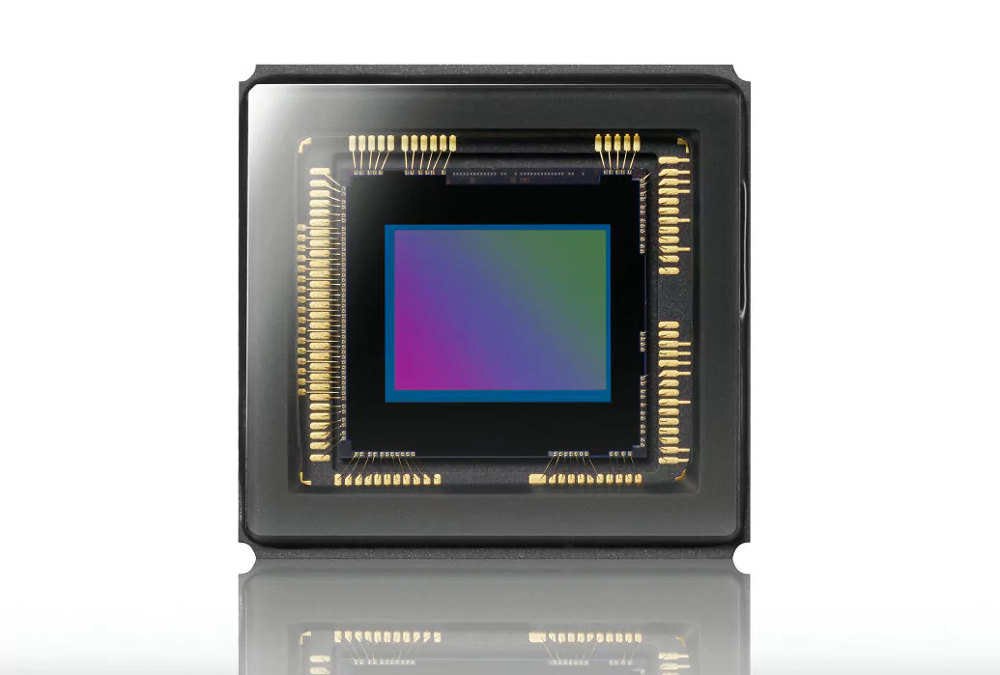

Le capteur est la pièce maîtresse. Il remplace la pellicule. Il est couvert de photosites qui captent les grains de lumière pour les transformer en électricité.
| Technologie | Point fort |
|---|---|
| Capteur CCD | Image très pure, plus rare aujourd'hui. |
| Capteur CMOS | Moins cher, très rapide, utilisé partout. |